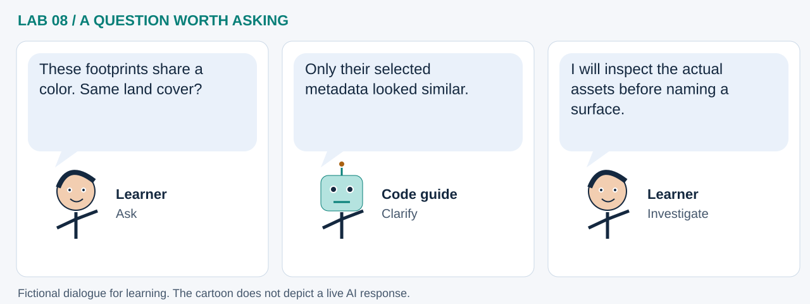

LAB 08 · 32-SECOND VISUAL WALKTHROUGH
A footprint is not its contents
Can we compare catalog items before downloading large imagery?
Silent, captioned storyboard. Use the player to pause, seek or change playback speed. On a small screen, use fullscreen or read the transcript below. The diagrams explain the method; they are not recordings of a live model run.
Download MP4 · Captions · Open infographic at full size

What runs here?
Browser HTTP searches may fail under provider access rules. Returned metadata is normalized, scaled and clustered locally.
Browser machine learning when enough items arrive: K-Means groups metadata, not image pixels.
Transcript and code landmarks
- 00–08s · Search
Bound the geographic question and the maximum returned sample.
requests.post(..., json=payload) - 08–16s · Normalize
Put different providers' metadata into a common set of columns.
pd.DataFrame(rows, ...) - 16–24s · Learn
Preserve unknown cloud values as missingness information before clustering.
items['cloud_missing'] - 24–32s · Inspect
Map valid footprints and compare groups with provider counts and cloud metadata.
geo_items = items[...]
The common misconception

Read the cartoon dialogue
- These footprints share a color. Same land cover?
- Only their selected metadata looked similar.
- I will inspect the actual assets before naming a surface.
Try explaining it
Is an imputed cloud value an observed measurement?
Check your reasoning
No. It is a model input substitute; the missingness flag and original metadata preserve the distinction.
Original educational illustrations and captions authored for this repository. See the notebook for data and software citations.